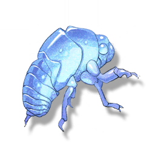

Gloom Slough
Resources

A material used for cooking.
Gloom Slough is commonly found in the ruins of villages or cities, named for the glow it emits, which resembles a ghost fire but has no heat.
Gloom Slough feeds on luminescent plants, and the shed skin it leaves behind preserves the luminescent enzymes concentrated on the surface of the original insect body.